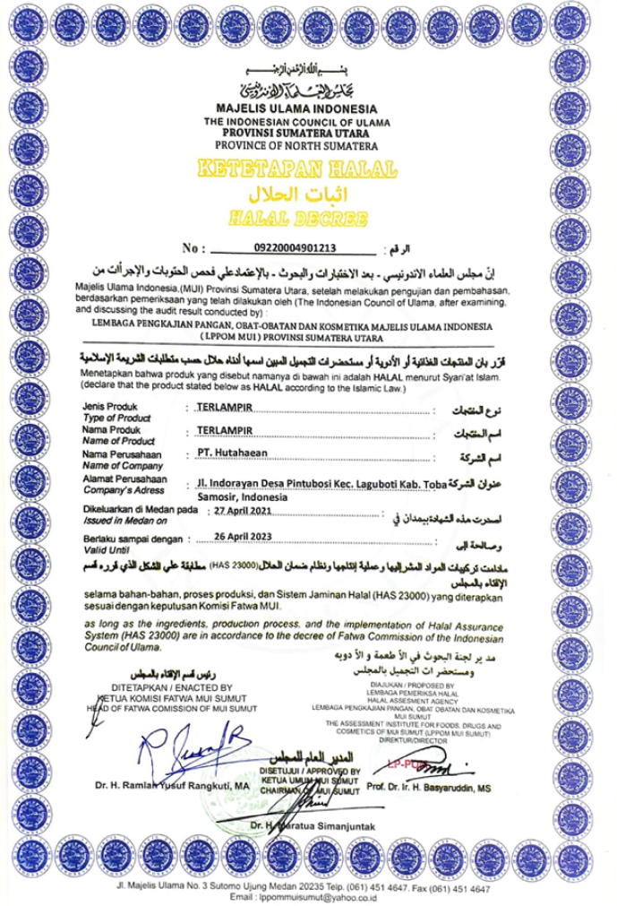
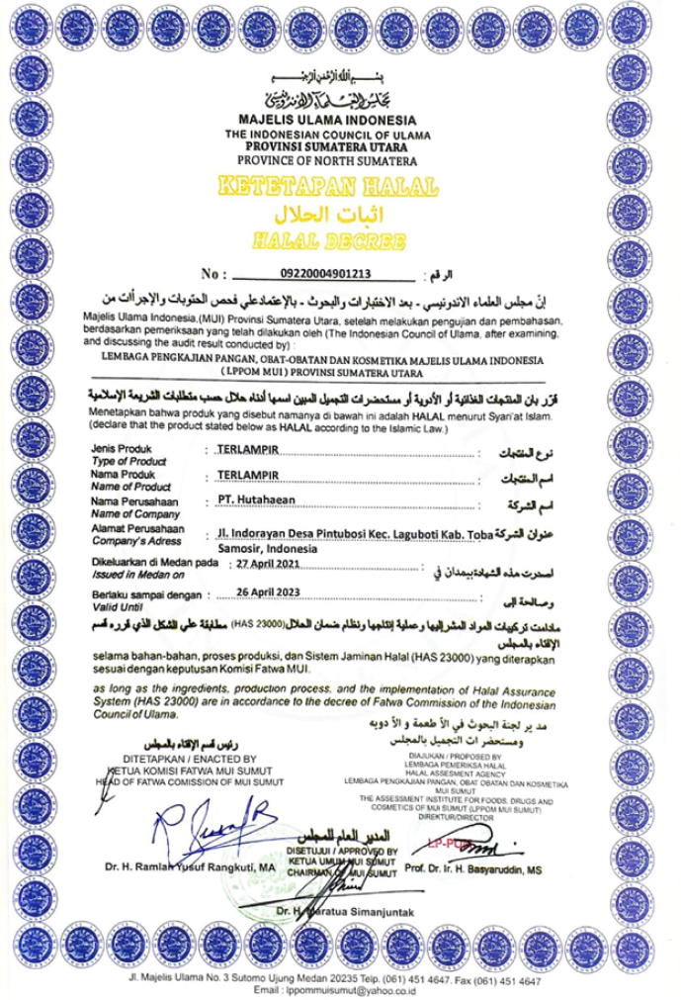
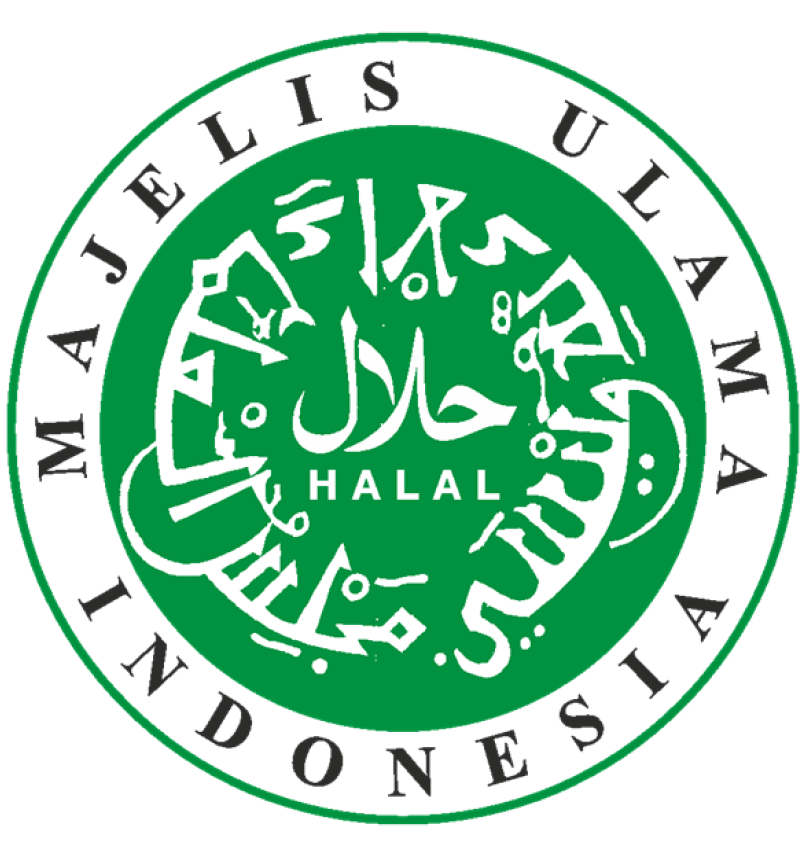
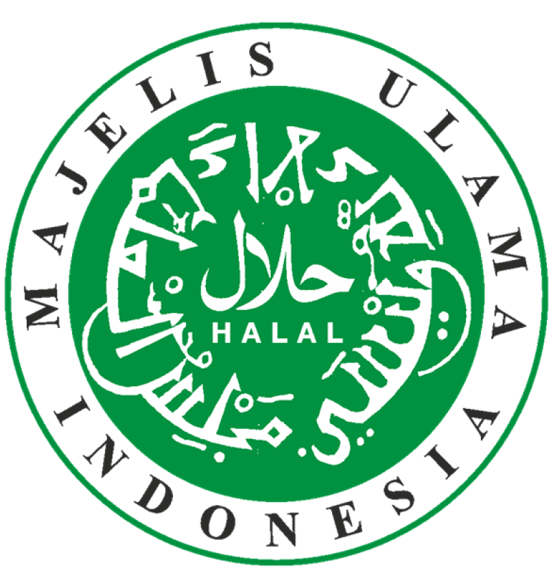

PT. HUTAHAEAN PABRIK TAPIOKA
Jl. Indorayon, Desa Pintubosi, Kec. Laguboti, Kab. Toba, SUMUT, 22381
Halal Produksi
PT. Hutahaean Pabrik Tapioka mempunyai sistem jaminan halal atau lebih dikenal dengan Halal Assurance System yang disusun, diterapkan, dan dipelihara oleh perusahaan pemegang sertifikat halal untuk mengatur bahan, proses produksi, produk, sumber daya manusia, dan prosedur dalam menjamin keberlangsungan proses produksi sesuai dengan ketentuan Lembaga Pengkajian Pangan, Obat-obatan, dan Kosmetika Majelis Ulama Indonesia
 

 
